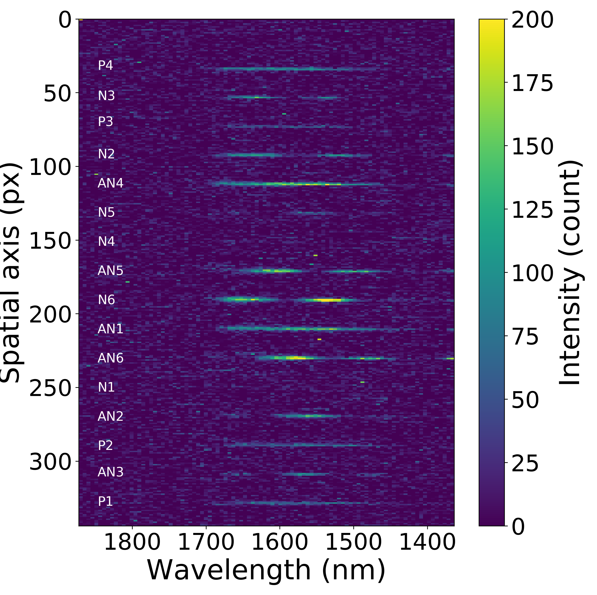

See UCSB press release
The GLINT nuller accurately measures stellar diameters 2.5x smaller that the Subaru Telescope diffraction limit, with sub-milliarcsecond precision. GLINT detects such small angles from nulling residuals: even though stars are smaller that the telescope diffraction limit, their small angular extent leaves a measurable residual in a nulling interferometer designed to cancel light from point sources. This milestone bodes well for GLINT's next goals: detection of planets and disks around nearby stars.
Details can be found on GLINT's 2021 Nature Communications paper.
We are opening two new modules for open use starting in S21B.
Following years of hard work, the MKID exoplanet camera (MEC) is now open to all Subaru users for scientific observations, starting in semester S21B. The SCExAO/Subaru and MKID/UCSB teams are excited to offer photon-counting imaging capability to astronomers, and looking forward to support this new mode. Check out the MEC page for details.
Fast polarization differential imaging (FastPDI) combines a high frame rate nearIR camera (C-RED One) with polarization modulation to reveal faint polarized features. This new mode is especially powerful for probing circumstellar disks. Check out the FastPDI page for details.
| |
The MKID Exoplanet Camera (MEC) installed on SCExAO is up and running ! See UCSB press release |
|---|
|  |
SCExAO/GLINT observed Arcturus on June 1, 2020, and measured its diameter to be 19.7mas. See raw data video, acquired at 1.4 kHz, and slowed down 47x to 30fps. More details in the GLINT instrument page. |
|---|
 |
Neptune imaged by SCExAO's near-IR viewing science path camera (C-RED 2 camera, 0.95 to 1.7 micron sensitivity). The short image sequence shows the planet rotation. Image processing by Julien Lozi. |
|---|